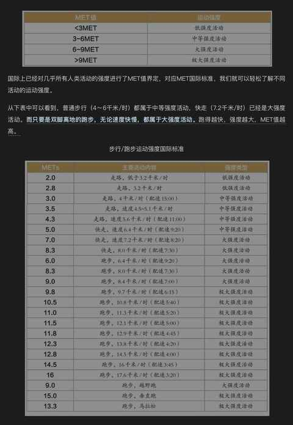
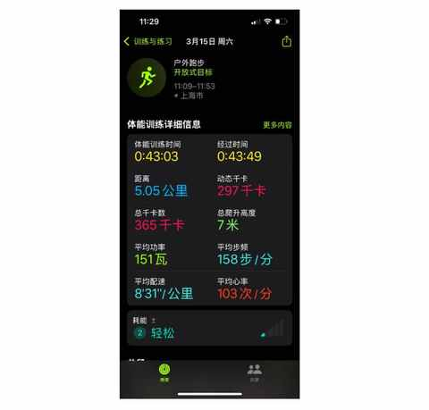
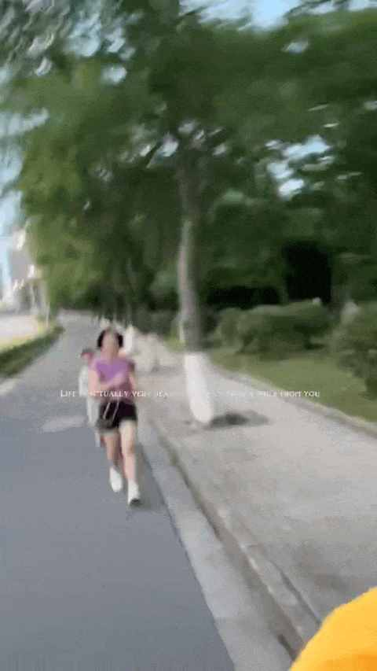
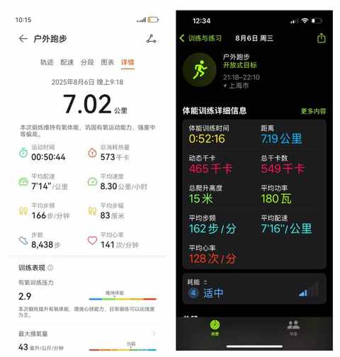
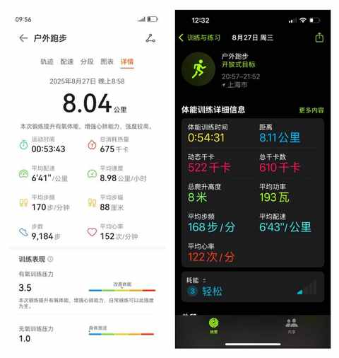
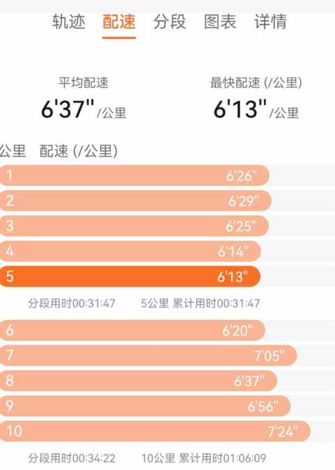
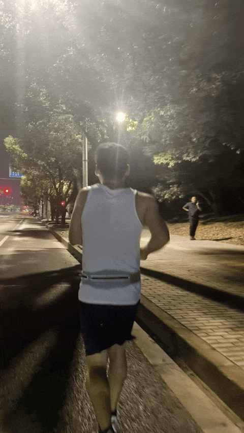

带人跑步有感：有难度、有收获、有意义
一、 有难度
跑步，是一项有强度的运动，随着配速的提高强度也同步不断升级。
在《无伤跑法》这本书中，两位作者对运动强度做了详细的科普：
从下表中可以看出来，对于普通人当配速达到 8:20其强度类型就已经是：大强度活动。

对于已经养成跑步习惯的人来说，跑步已近乎本能，如果因为天气之类的跑不了步，反而会难受。
形成鲜明对比的是，带人跑步是一件颇有难度的事情，特别是 有运动基础和没有运动基础的差别。
难度 ①：个体差异
有运动基础能适应的更快，没有运动基础会稍慢。
有人可能更适合在场地跑，但是你带着他路跑
有人比较适合晚上跑，你非要带他早起跑步
有人跑完不注意拉伸，越跑身体反而越难受
……
自 3 月份开始陪老婆跑步，属于有一定运动基础的类型，当时会每周 1-2 次上瑜伽课，偶尔会骑车上下班。
对当时的老婆而言是绝对的高强度运动。所以一开始跑的时候，采取的是低频低难度的方式：
- 每周跑 1 次，一般放周末
- 采取跑走结合的方式，跑累了就步行

上图是 陪老婆跑她的人生中第一个 5km时候，我的 Apple Watch记录的活动记录，虽然中间步行 1km，但整体表现依然超出预期很多。

上图是5 月底的一个傍晚，带邻居一起从小区跑到万达广场，距离 2.5km。
难度 ②：细节多
一件事情只要细节一多，踩各种坑的概率必然变高！
时刻谨记安全第一的理念：
跑步是为了健康，那么每一次跑步都必须要安全的进行，在没安全保障的情况下不做有风险和挑战身体极限的事情。
要注重的细节（ 包含但不限于 ） 下面这些 ：
- 跑前：
- 跑中：
- 跑后：
二、 有收获
收获 ①： 带人跑和自己跑大 不一样
虽然都是跑步，自己单独跑和带人一起跑是截然不同的两件事。
刚开始跑的过程中要关注他人状态，要根据情况决定是跟在后面跑，还是在前面跑，是在左侧还是在右侧。
收获 ②：每个人都有专属跑姿
前期不纠正任何关于跑姿的问题，极大可能那并不是问题，每个人跑起来的姿态就是不一样的，刚开始的时唯一提醒的是摆臂幅度稍微大点。
收获③：保守策略更利于坚持
一开始就注意心率的控制，稳住心率等于把配速控制在身体能承受的范围里面，果然第一个 5km 顺利完成。
在尝试跑 8km 的时候，只强调一个点：
前面 5km 能按日常配速进行，但最后 2km 要根据体感和心率去降速。
第一次 8km 尝试在 8 月初，由于实在是温湿度都偏高跑到 7km 之后体感上太累，及时停了：

（左边是朋友的数据，右边是我的数据）
第一次 8km 尝试在 8 月底，配速比第一次更快，天气也不错，顺利完成：

（ 左边是朋友的数据，右边是我的数据 ）
比较惊喜的是，距离完成 8km 不到 2 周，他就顺利完成了 10km，这个时候就凸显出来有运动基础的好处：适应和提高的都很快。


可喜可贺，从开始跑步到完成 10km，不到 100 天，感觉明年年初都能去跑半马试试。
三、有意义
带人跑步， 是一件成就满满的事情。
不仅能强身健体，更能愉悦身心，让 “ 生命在于运动 ” 不止于一句口号！
如果你也喜欢跑步，不妨带带身边的人一起跑起来。